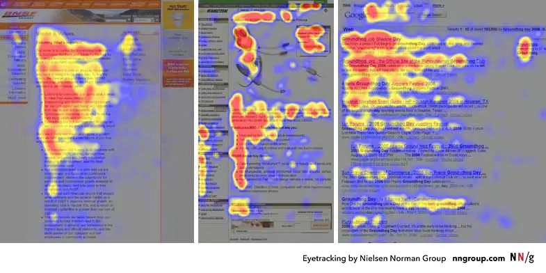
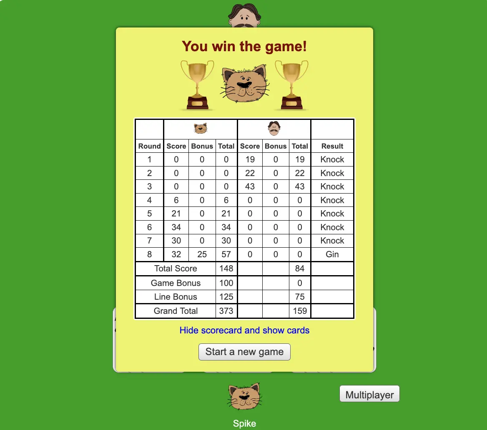

Zine#47
🎵 カルトヒーロー by ホテルニュートーキョー
好久不见呀 (*・ω・)ﾉ
终于又更新了一期 Zine，这期的 Emacs 部分占比不少，因为把所有没看的 Emacs News 都看了一遍，如果你对 Emacs 感兴趣，打算入门的话，可以看看我写的 如何上手 Emacs。
还有很多订阅的文章没看，留到下期吧。
生产力方程式中常被忽视的部分是懂得何时停笔。不断增补内容持续创作的感觉固然很好，但谁都不想因过度透支而迅速枯竭。
The 10-Commit Rule: how git version control can improve writing quality by chris
News | Article
The Colonization of Confidence. by Robert Kingett
强烈推荐阅读原文。
作者和他的朋友参加了一个写作小组，小组的一个人崇拜和鼓吹 LLM，看不上人写的粗糙的、真实的、「不够流畅的」、充满情绪的文字，还拿着别人的文字丢给 LLM 润色修改，并认为 LLM 修改后的更好。
后来他的朋友被说动了，开始用 LLM 创作，他的朋友也认为 LLM 比自己原来的文字更好，甚至觉得没了 LLM 就不会写作了，认为自己失去了写作的能力，朋友的写作信心被慢慢地瓦解了，作者感到悲伤，也感到愤怒。
于是作者创建了一个禁止 LLM 的写作小组，邀请那位失去信心的朋友参与，一段时间后，这位朋友摆脱了 LLM，重新找回了充满他个人特色的文字。
摘录 (很长)
里奥坐在我身旁。我能听见他呼吸中透出的不安节奏。作为一位黑人作家，他的声音宛如爵士乐般难以预测、切分音层叠，充满意外的不协和音，最终又化解成令人心碎的和弦。他书写自己的生活，德克萨斯夏季黏稠闷热的具体质感，以及周二午后廉价冰棒带来的那份喜悦滋味。
「我有了些新东西，」利奥说。他的声音很紧绷。「不过 ⸺ 还很粗糙。实在乱得很。」
「乱一点才好，」我倾身向前，「有血有肉的东西总是藏在杂乱里。」
利奥是个笔力雄浑而不羁的作家。他说话时嗓音低沉有力，仿佛重载卡车碾过碎石路面，带着某种拒绝被磨平的沧桑底蕴。当他高声朗读作品时，整个房间的空气都会为之一滞。他的文字从不「工整」。不似流水般顺畅；倒像糖浆般浓稠绵密，又或如岩浆般灼烧万物。他惯用直抒胸臆的笔法，这种被评论家诟病的风格，我却觉得无比真实。他不请你旁观，而是命令你倾听。
而他写下的每一个字，我都深深爱着。
Leo 阅读着。这是一篇关于他祖母厨房的文章。他将羽衣甘蓝的气味描绘成一条厚重的绿毯，将空气完全降服。他将祖母的笑声形容为一扇依然运作完美的生锈铰链。
它很美丽。它并不完美。它让我骤足。
「这……有点意思，」查德说道。「但节奏感有点奇怪。而且那个关于铰链的隐喻？它有点让你从沉浸感中抽离出来，不够流畅。」
「它本不该流畅，」我厉声道，「它本应真实。」
「我想，」利奥低语道，「我可能对那个铰链太过较真了。」
「不，」我的声音低沉如护院犬的警告低吼。「那道门铰链完美无瑕。钟声是个谎言。利奥，那台机器没有改进你的写作 ⸺ 它抹去了你祖母的存在。」
「你就是对这些工具有抗拒心理，罗伯特，」查德叹了口气。「这是未来趋势。要么适应，要么消亡。」
「哦，你一边去吧。这根本不是适应，」我紧握着桌沿，指节都开始作痛，「这简直是脑叶切除。」
问题在于，创作艺术 ⸺ 真正的人性化、有意义的写作 ⸺ 是缓慢的。它代价高昂。它充满变数。而且它包罗万象。它需要与人打交道。那些带着创伤的人，那些持有政治立场的人，那些声音不符合企业风格指南的人。少数族裔作家尤其「摩擦系数高」。我们探讨酷儿议题、跨性别恐惧与种族主义，我们直面残障议题。这些内容让广告商如坐针毡。
于是这些科技大佬们，以其无穷的平庸，决定彻底绕过人性因素。他们打造的机器未经许可就掠夺我们的心血 ⸺ 我们的痛苦、我们的喜悦、我们的灵魂 ⸺ 将其碾磨成数学浆糊，再挤压成无味无害的糊状物，任人按桶出售。
他读了里奥的原句。我知道这是里奥的句子，因为它有锋芒。
然后，他接触到了 LLM 版本。
众人低声议论着。「哦，这样读起来流畅多了，」有人说道，「更具 ⸺ 普世性。」
「普适性就是平庸，」我厉声说道，暗自希望自己能操控程序让查德那愚蠢的 LLM 自动销毁。「它试图触及所有人，结果反而无人触及。」
「罗伯特，」查德叹了口气，「你总是爱唱反调。你看，数据不会说谎。读者更喜欢第二个版本。我们在 Wattpad 上做了 A/B 测试，第二个版本的用户留存率高出 40%。」
「你给他们喂的是污泥，」我提高嗓门说，「而他们饿得发慌，只能吞下。最后你还告诉他们，污泥就是食物的味道。」
「他们喜欢这种条件反射，」我语气尖锐地说，「喜欢这种熟悉感。这就像语言界的麦当劳薯条 ⸺ 经过化学调配让人觉得可口，却毫无营养价值。它穿过大脑时，根本不会留下任何痕迹。」
「也许我就是个坏人，」里奥说。这句话悬在空中，沉甸甸的，湿漉漉的。
「你并不差劲。你不过是身处一个试图兜售手机铃声的世界里的爵士乐手。」
「罗伯特，我真的撑不下去了，」利奥说，随即崩溃了。那不是呜咽，而是持续的喘息，胸膛不断塌陷。「该死，今早我试着写点东西。就我一个人。面对空白文档，我盯着闪烁的光标，每个浮现的句子都显得 ⸺ 苍白无力。像业余之作。我写下 『雨点敲打屋顶如砾石』，转念又想：不，AI 能写得更好。于是我删了。全都删了。」
我正要开口时，他继续说道：
「罗伯，我感觉自己好蠢，」他哽咽着说，话语被泪水淹没。「我感觉自己好蠢。我让它钻进我脑子里，现在却赶不出去。我看着自己的想法，它们看起来是错的。它们看起来像错误。」
我起身绕过桌子，循着他的呼吸声摸索前行。找到他的肩膀后，我将他揽入怀中。他像抓住救命稻草般紧紧抱住我，双手攥着我的身体，仿佛我是他海上唯一的救生艇。
「这就是陷阱，里奥。这就是心理战。他们兜售的解决方案，正是他们自己制造的问题。他们想让你感到不安。一旦你感到不安，就会付费订阅。他们正在剥夺你的自信，然后把人造的自信卖给你。 」
「我赔钱了！」他哀嚎着，「我赔钱了，写不出东西了 ⸺ 读者们 ⸺ 读者们都爱我的 LLM 写作！我该怎么办啊，罗伯！读者喜欢，编辑也喜欢。杂志社的编辑们。我写不出东西了！我简直 ⸺ 我到底怎么了 ⸺ 为什么读者会喜欢它？」
「我不知道，」我诚实地回答，轻轻摇晃着他，试图用言语抚慰他的心。「但人们想吃麦当劳，并不意味着我们就要放弃家常菜。可我真的不知该怎么办。我只是个普通人，但里奥，我爱你，好吗？只要你需要，我永远都在。如果你需要我看看草稿或者 ⸺ 」
「问题不仅在于订阅量，」他哭诉道，「更在于读者。他们已经习惯了平庸之作，罗伯。他们习惯了那些圆滑的笔触。我的写作…我的真正写作…现在感觉摩擦力太大了。就连编辑们也是如此。那些本该更有见识的人也一样。」
「摩擦是热量的来源，」我激烈地说，「摩擦才是生命的所在。」
但他听不见我的声音。瓦解战术正在生效。他正将自己拆解成零碎的部件，用合成填充物替换原有零件 ⸺ 因为这个世界告诉他，他自身的零件都是残次品。
我决定读点东西。我通常不会这样做。我的作品都留给博客，留给那些懂得屏幕阅读器并非桎梏而是工具的人。但我需要向里奥证明，不完美才是力量。我需要证明，未经雕琢的文字比经过加工的数据更能直击人心。
我读到一篇关于母亲的文章。它粗粝而愤怒，将她的声音比作 「锯齿刀划过温热黄油的声响」，将拖车公园的气味形容为 「湿纸板与变质的野心」。文字支离破碎，没有华丽的装饰，没有交响乐般的韵律。这篇文字逼着你直面丑陋，并直呼其名。它不完美，却全然是我。
当我说完时，房间里一片寂静。
「有意思，」查德说。这话带着不屑。「很 ⸺ 直白。但老罗，老兄，这有点难懂。句式结构乱七八糟的。还有 『湿纸板』？有点恶心，对吧？」
「这是事实，」 我说。
「真相无法量化，」查德说着敲击键盘。「我只是好玩，把你的第一段文字喂进了正在测试的新版 GPT-fiction-Plus 程序。就想看看它如何处理核心概念。我给它设定了『提升语体』和『优化句法』的指令。」
「别这样，」我警告道。声音骤然压低 ⸺ 平静、危险、毫无波澜。「别用你的搅拌机搅乱我的生活。」
「太迟了，」查德说，「听听这改进。」
他清了清嗓子，享受着此刻。我感觉心口仿佛被千箭射穿。
查德说完后，脸上绽放出灿烂的笑容。我甚至能从他的语调里听出笑意。「看？信息没变，但现在更易接受了。现在这才是内容。去掉了攻击性，语气也平缓了。客观来说，这才是更好的写作。」
前排一位女士低声说道：「哦，这可好多了。感觉更 ⸺ 有文学气息。」
「没错！」 查德说，「我修好了。」
「查德，」 我平静地说，声音如同老师在纠正一个不情愿的学生，「为什么它选择 『石头』 作为喉咙的隐喻？」
「什么？因为它很聪明。它很机灵。它懂。因为它很合适。」
「不，」 我说，「它选择 『石头』 是因为在未经许可从互联网抓取的数千亿字节训练数据中，『石头』 与 『喉咙哽咽』 出现邻近的概率为 0.04% ，高于 『湿漉漉的生物』。这并非选择。这是数学问题。它不过是强化版的预测文本算法。它不懂何为咽喉，不懂恐惧的滋味，只是基于平庸数据预测下一个词符而已。」
「这依然是更好的写作方式，」 查德坚持道，但他的声音因愤怒而颤抖 ⸺ 他认为对方是个技术恐惧症患者，却比他更懂这项技术。
「这不过是能力幻觉罢了，」 我说，「查德，指望那台机器提升写作水平，就像指望搅拌机改良沙拉。你得不到更好的沙拉，只会得到一团糊状物。而你们 ⸺ 」我转头环视全场，「你们都在为这团糊状物喝彩，只因它容易吞咽。你们任由这个技术宅说服自己，把自身独特的味道当成缺陷。」
我听见身旁传来声响。
是里奥。他正发出受伤动物试图保持安静时的呻吟声 ⸺ 喉咙深处传来尖锐而细微的呜咽。
「你 ⸺ 修好了，」 里奥低声说道。
「看吧？」 查德对我说，「连里奥都懂。」
「不，」 我说。我站起身，咔嚓一声展开手杖，寂静的房间里这声响如同枪响。「你没修好它。你把它阉割了。你把一声嘶吼变成电梯音乐。你把生命里那些具体而痛苦的质感，变成千篇一律的库存照片。」
「没错。正因如此，我想创造一个空间，一个绝不允许这种事发生的空间。我想组建一个新团体，」我说，「在这里，下班后。但我有规矩：禁止大型语言模型。不仅是劝阻 ⸺ 是直接封禁。我要配置你的路由器，让所有指向 OpenAI、Claude、Anthropic 等平台的请求都落入陷阱。若它们试图连接，浏览器就该跳转到一个 HTML 页面 ⸺ 上面会有一只充满批判意味的猫对着你咕噜咕噜叫。」
Tired of the Slop? Come write poorly with us.
Recovering Prompters Welcome.
We don't want your polished draft. We want your mess.
布列塔尼笑了。那笑声如乐章般悦耳，仿佛在告诉我世间万物皆安好。「亲爱的，我不要你的钱。你知道我这半年都在读什么吗？人工智能生成的文学 RPG 小说。成千上万页的垃圾。我渴得要死。我淹没在烂泥里。我坐在卡座里，读着毫无意义的句子 ⸺ 无人所写，只为算法而生。」
「我们从未见过专门帮助新手作家成长的空间。这个主意太棒了。我们想贡献自己的力量，想伸出援手。听说这里有不屈的灵魂，」大卫用浑厚的男中音说道，「听说有未经雕琢的艺术家。我们想免费阅读他们的作品。让我们啃点真实的东西吧。让我们讲述那些正在茁壮成长的故事。」
「我们这里有许多未经雕琢的艺术家，」我说，「欢迎来到作家的花园。」
「今晚最后一位登台的艺术家，」莎拉宣布道，「是里奥。」
跺脚声越来越响。
我听见里奥走向麦克风。他的脚步沉重而有力，是那种深知自身分量之人的脚步。
他清了清嗓子。那是个湿润而紧张的声音。
「这是 ⸺ 这是初稿，」里奥说。他的声音微微颤抖。「有错别字。我没用拼写检查器校对。当然也没给 Claude 看过。而且 ⸺ 有段时间，我以为没有它我就写不出东西。以为自己的声音已经破碎。但朋友们告诉我，破碎的东西依然能发出声音。」
笑声。温暖而支持的笑声。
「它叫《爱的滋味》。」
他开始阅读。
这是我听过最棒的故事。讲的是他妈妈在厨房里为他做饭的事。故事里有些磕绊，某些比喻稍显偏离。但一切又都回到了里奥的风格。即便存在瑕疵，这仍是数月来他讲得最精彩的故事。
布列塔妮正站在我身旁。当场景在我们脑海中徐徐展开时，我听见她猛地吸了口气 ⸺ 那是纯粹的赞叹之声。随着他深入作品，言语间愈发自信。所有人皆沉醉其中。
「他很棒，」她轻声说道。
「他是真的，」我轻声回应。
里奥继续读下去。他描述风中纱门砰然关上的声响，描绘祖母双手的触感 ⸺ 「粗糙如未经打磨的松木」。当谈及她的衣衫时，他毫不掩饰眼中的泪水。他毫无保留，不试图掩饰任何混乱的痕迹。
他用摩擦构建了一个世界。
当他说完时，现场陷入了一秒钟的沉默 ⸺ 那种当真相在房间里落地时才会出现的深沉而凝重的寂静。
然后，世界轰然炸裂。
掌声不仅是双手的拍击。那是呐喊，是人群的咆哮，是口哨声。人们跺着脚。我发誓，那声响仿佛撕裂了时空。木地板震得如此剧烈，震动沿着我的手杖传入骨髓。
掌声是爱的物理性攻击。我听见里奥抽泣，仅此一次，麦克风里传来一声急促的吸气，随即被喧嚣淹没。
我感到有人把手搭在我的肩上。是莎拉。
「我们做到了，罗伯！」她在轰鸣声中喊道，「是我们创造了这一切 ⸺ 这个夜晚 ⸺ 是我们做到的！」
我靠在砖墙上，感受粗糙的纹理勾住外套。倾听人类混乱而未经雕琢的嘈杂声响 ⸺ 他们为一个棱角分明的故事嘶吼，那声音如此美丽。
科技大佬们可以保留他们的代币。他们可以保留他们的规模。他们可以保留他们的 LLM 模块。
我们拥有爱。我们拥有关怀。我们拥有声音。
而此刻，当泪水毫无顾忌地滑落脸颊，我才明白 ⸺ 这正是他们永远无法编程的东西。
The Bookstore Hope by Robert Kingett
强烈推荐阅读原文。
一个推销员进入了作者所在的书店推销 AI 阅读工具，即使很多人都表示了拒绝，他依然穷追不舍。于是作者站起来和他进行了争论，最终驱赶了这个推销员。争论结束后，店长对他的安慰和照顾也让人感到温暖。
尽管篇幅不短，但是作者的文笔引人入胜，文字读起来有一种韵律感，惊叹作者的感受力。
摘录 (很长)
贾维斯书店的地板会吟唱降 B 调的旋律。
这是一种令人安心、余韵悠长的声音，一种深沉如木质的嗡鸣，从我的鞋底传遍全身，最终沉淀在骨骼里。这不是年久失修的吱呀声，而是建筑沉降的声响 ⸺ 是厚重坚实的乌木与桃花心木在承载故事重压时发出的自然调整。这里的空气涤净了都市的尾气与焦虑，弥漫着洋甘菊的温润茶香、可可脂丰腴油润的气息，以及旧纸张散发出的淡淡尘香与香草气息。
门上的铃铛不只是叮当作响；它在尖啸。紧随其后的是一阵冷风，以及一股刺鼻的气味，像化学灼伤般直冲我的喉咙 ⸺ 那是刺鼻的臭氧、昂贵的合成古龙水，还有一股明显的、带着金属质感的特权气息。
脚步声。沉重、急促，皮鞋后跟毫无节奏地敲击地面，只顾前行。
气压骤变。一股新的气味侵入了这片已被外来气息占据的寂静 ⸺ 那是电子元件过热的独特气息，混合着灰尘与灼热。
「先生，」贾维斯的嗓音隆隆响起。它很平静，却带着一股迫近的暴风雨般的威压。「我们正在阅读。请您放低音量。」
天啊，我太爱那嗓音了。那简直是地质事件。他从不大喊大叫 ⸺ 也无需如此 ⸺ 但他的横膈膜推送空气的力道，足以让书架上的书本震颤作响。
「我请你放低音量，或者离开。」贾维斯说道。平日他身上那种暖意 ⸺ 当他经过我桌边时我能感受到的那种熔炉般的热情 ⸺ 已然消失无踪。他的嗓音如同冰冷的铁。
房间里的沉默持续蔓延，紧绷而颤动。我能听到亨德森先生的呼吸变得急促。这位闯入者不仅粗鲁无礼；他是个殖民者。他走进这片宁静平和的阅读天地，却将其视为自己塑料垃圾的试验场。
够了！我真是受够了他这种人。
怒火从胃里翻涌，灼热而尖锐。这不仅是粗鲁，更是傲慢。是那种 「快速行动，打破常规」 的心态闯入宁静平和的房间，企图向人们兜售更糟糕的现实订阅。
「真是垃圾，」我厉声说道。「我能听出你语音指令中的延迟。你在用 Snap 软件包，对吧？或者你正在为 Wayland 合成器而挣扎，因为你把花哨的 VR 图形放在了实际输入稳定性之上。你这是要人们把内核恐慌绑在脸上，还称其为扫盲教育。」
「不！听着，蠢侦探，这根本不是阅读！」我将手杖末端重重砸向地板，声音如枪声般炸裂。「阅读发生在寂静中！它发生在大脑的默认模式网络中，由我们自己构建世界！你这是在强迫大脑进入 任务积极状态，用视觉噪音干扰它，让它无法做梦！你在侵占想象力，因为你无法忍受那些未被你商业化的宁静时刻！」
「你根本不懂阅读！」我的声音在这片寂静中如此洪亮地铺展开来，连我自己都未曾想过能做到这样。「阅读不是被动接收信息，而是一场共同创作。作者搭建框架，读者在框架内构筑城堡。这是私密的体验，是世间最后一方私密净土。当我阅读时，这一切都发生在我静谧的脑海之中。可你呢？你只想闯进那个房间。当我的想象力明明运转自如时，你偏要在我想象的墙壁上贴满广告牌。我，至少我，不需要发明机器来替我幻想。」
「你知道吗？」我继续说着，步步逼近，直到能听见他夹克布料摩擦的声响。「每一天。每一天，在网上，我都要应付你们这种搞技术的人。我不能尝试某些开源软件，因为某个懒散的三流程序员写出一堆破碎无用的垃圾代码。我无法查收邮件，因为我会收到 90 封来自愚蠢技术布道者的推销邮件，就因为没人能把『不，别来烦我』这句话当回事。」
「也许人们只是想坐下来，」我打断道，「读本书，喝点茶或热巧克力，脸上没有那些脚本拙劣的操作系统故障。也许真正的创新在于社区，而非一个漏洞百出的操作系统。」
随后，气氛再次转变。一股巨大的热源穿过人群，将空气像船首般劈开。
「罗伯特。」
贾维斯。
他没有问我好不好，也没有远远递来纸巾。他跨进我的私人空间，将我们之间的距离彻底瓦解。他那如粗壮树枝般厚实的手臂环抱住我，将我拉进他胸膛那广阔而温热的炉膛之中。
我放手了。
我把脸埋进他法兰绒衬衫粗糙的棉布里，呼吸着他身上深邃而复杂的构成 ⸺ 香草豆的甜暖、石榴的鲜明酸涩，以及那股根植于大地般的安稳气息。他紧紧拥着我，力道恰好足以让我破碎的片段不至于飘散。他轻轻摇晃着我，那缓慢而有节奏的摆动，与他呼吸的韵律完全合拍。
我紧紧抓住他不放。我抓着他衬衫的一角，手指绞进布料里，仿佛重力失效，唯有他是我与地面相连的纽带。我埋在他胸前哭泣，泪水浸透了他的衬衫。
他只是抱着我。开始轻轻摇晃。缓慢而有节奏地摇摆。来来回回。
摇摆。呼吸。摇摆。呼吸。
真庆幸他没有让我噤声。他像摇晃一个孩子那样轻摇着我，仿佛我是一件被摔碎后送到他这里修复的珍贵物品。
「真是精彩绝伦，」他凑近我的发丝低语道，「你把他驳得体无完肤，将他剥解得淋漓尽致，罗伯特。这般场面我前所未见。」
「贾维斯，我只是 ⸺ 我只是累了。」我呜咽道。
「我知道。我知道你是。现在休息吧。好好休息。」
我们这样待了很久。书店渐渐从意识中淡去。我感受到的只有他肌肤的温度，香草的气息，以及那颗心脏坚实有力的律动。我感觉到紧张感从我的肌肉里缓缓消散，取而代之的是一种厚重的、糖浆般的温暖。
最后，啜泣渐渐缓和。我微微后撤，猛然意识到自己身处何地，羞耻感瞬间袭来。
「我 ⸺ 我把鼻涕弄到你衬衫上了，」我惊恐地低语道。
贾维斯笑了，笑声低沉而温和。「它会褪色的，小狮子。衬衫可以换，你却不能。」
我挽着他的手臂。法兰绒衬衫下是结实、坚硬的肌肉。他没有拉着我走；而是按我的步调移动，缩短步幅与我保持一致。他是最出色的无意识视障向导。他是人行道的触觉地图。当他向下迈步时，我能感受到他肩膀的下沉，知道前方有路缘石。当他停下时，我便明白该止步。
我们在沉默中走了好几个街区，但此刻的沉默却充满默契。城市的喧嚣 ⸺ 远处的警笛声、轻轨列车的轰鸣、公交车刹车的嘶嘶声 ⸺ 都渐渐淡入背景。
「罗伯特？」贾维斯问道。
我僵住了。他的声音低沉下来。不再是书店老板那种命令式的口吻。它变得柔和、亲密，他的尼日利亚口音仿佛在哄我入睡，将我的名字边缘都磨得圆润。
「我可以再抱你一次吗？」
我点头，突然间，天地仿佛都收窄了。
他的双手抬起。温暖而干燥，大得不可思议。他捧住我的脸，掌心覆上我的脸颊，手指向后探入我的发间，拇指轻轻搭在我的颧骨上。恍若天堂。
转眼间，消毒水味的走廊消失了。地板蜡的气味消失了。白日的回响消失了。唯一存在的，是他肌肤的温热、香草的气息，以及那双手牢不可撼的安稳。仅凭触摸，他凭空构筑了一个家园。
「要停止关心别人真是太容易了，」我低声说着，新鲜的泪水此刻流得更快了，他的拇指正拼命为我擦拭。「大家都在这么做。我曾尊重的作家们。朋友们。他们只是 ⸺ 放弃了。他们选择了轻松的道路，确保自己得到所需，然后就不再关心他人，不再关心团结，甚至不再关心道德。我太累了，贾维斯。我害怕有一天早晨我会累到再也无力抵抗，任由资本主义夺走那些支撑我的爱，然后我就会失去我的灵魂。我会变得空洞无物。」
他凑得更近了。我能感觉到他的呼吸，带着薄荷茶的暖意，拂过我的唇间。
「你是一道金色的光，」他低声说道。「你向上奋进。你学习。你成长。你不再是那个说蠢话的男孩；你是那个明白了那些话为何愚蠢的男人。那不是软弱。那是力量。」
我们之间的空间充满了张力，充斥着未竟之言。我能感觉到他的心跳在空气中震动，又或许那只是我自己的心跳，正与他的频率共振。
他俯下身，吻了我。
那不是一个掠夺式的吻。它并不仓促。它缓慢而深沉，带着咸味和薄荷的气息。他的嘴唇柔软、丰满且从容。他吻我时，仿佛在封存一个诺言。他吻我时，仿佛在将他自己的力量注入我的肺腑。
天哪，这种感觉真好，如此真实。
The Braille Menu Conspiracy by Robert Kingett
文章记录了作者去餐厅使用盲文菜单的经历，大概很少有盲人光顾，也就没人在意盲文菜单的好坏，盲文菜单基本不可用。
Personal blogs are back, should niche blogs be next? by John Lampard
Niche blog 指的是专注于某个领域/主题的博客，而且内容往往经过精心打磨，文笔精炼、品质上乘。
找一个自己感兴趣的主题/方向，多写一些相关文章，多打磨文章内容，或许就能称得上是一个 Niche blog 了吧。如果主题偏小众，那就更符合 Niche blog 的定义了。
一些内容上接近的博客
- 太隐 博客的「棱镜通讯」专注于写一些人物
- African Music Forum 专注于非洲音乐的分享
- Xah Lee Web 这个博客内容比较庞杂，但也专注于一些主题，例如 Keyboard、Emacs
- 極客死亡計劃 关于 塔罗牌、词源学
- 枫林灯语 博客会分享一些关于无线电的内容
除了 Niche blog，还有 Niche Museums。
It’s hard to justify Tahoe icons by Nikita Prokopov
文章吐槽了 macOS Tahoe 的图标设计，可以作为反面例子学习如何设计和应用图标。
Good Writing by Paul Graham
文笔之所以称为优秀，有两种解读：其声韵可以优美，其观点可以正确。它可以拥有流畅悦耳的句子，也可以对重要事物得出精准的结论。这两种优秀看似互不相干，就像汽车的速度与漆色那般毫无关联。然而我认为并非如此。 我相信声韵优美的文字往往更可能正确。
我也有类似的感受，读起来通顺的文章，往往表达也更清晰。我会偶尔翻看已经发布过的文章，有的句子读起来有些拗口、不通顺，我就会尝试重写，使其读起来更通顺一些，这会促使自己思考怎么表达更合适，最终文章读起来会更通顺，逻辑上也会更清晰一些。
类似的观点：
- Diversify your Vernacular by David Perell
- Write CLEAR Sentences by David Perell
摘录
我想，如果你随意指向任何人写的任何段落，并让他们稍微缩短（或加长）一些，他们很可能能够想出更好的表达。
这一现象最好的类比是摇晃一个装满不同物品的容器。晃动是随机的运动。更准确地说，这种晃动并非经过计算以让任意两个特定物品更紧密地贴合。然而反复晃动必然会促使这些物品发现极其巧妙的堆放方式。重力不会让它们变得松散，因此任何变化都只能意味着更好的堆叠效果。
写作亦是如此。当你不得不重写一段生硬的文字时，你永远不会把它改得更背离本意。就像重力无法容忍物体向上漂浮，你同样无法容忍这种失真。所以任何文字内容的调整都必然使其更臻完善。
细想之下这个道理显而易见。好听的文字更可能是正确的，正如反复摇晃过的容器更可能被塞得严严实实。但其中还有更深层的原因：文字悦耳不仅是促使文章观点优化的外在随机力量 ⸺ 它本身就能帮助你更精准地把握思想。
原因在于，这会让文章更易于阅读。阅读行文流畅的作品需要花费的精力更少。这对写作者有何帮助？因为写作者是第一位读者。当我撰写文章时，我花在阅读上的时间远多于写作。某些部分我会重读 50 次甚至 100 次，反复琢磨其中的思想，并自问 ⸺ 就像有人打磨一块木头那样 ⸺ 是否有任何地方卡顿？是否有任何地方感觉不对劲？文章越容易阅读，就越容易察觉到是否有什么地方不够顺畅。
On 10 Years of Writing a Blog Nobody Reads by Joe Boudreau
文章回顾了作者 10 年的写作经历。
摘录
[…] 我过去使用了太多的限定词和冗长的短语。那是我口语的直接翻译，事实证明，这是一个糟糕的写作策略。如果你的目标是让别人阅读 ⸺ 并且希望他们喜欢 ⸺ 你的文字，你应该努力编辑你的想法。
以下是我当时几乎在每个句子开头或结尾都会添加的无用短语样例：
- 我认为……
- 我觉得……
- 我相信……
- 对我而言，……
- 感觉就像……
- 似乎……
- 在我看来……
刚开始写作时，这是我的最坏习惯。这种废话只会让读者疲惫不堪。在观点文章中任何地方加上「我认为」都是多余的。
使用这种「谨慎」的语言只会让你的观点变得软弱无力，以至于无法引起争论。如果你用「我觉得……」开头，那么后面说的任何话都没人能反驳，因为这只是你的感受。读起来实在乏味。
有了想法就该马上记下来。坦白说，这段文字的雏形是今年一月某个凌晨五点在床上写成的。灵感何时降临永远无法预知，所以我发现最好的方法是迅速捕捉念头，事后再展开完善。
Journalling without the mental block by Protesilaos Stavrou
写作有助于理清想法。写作是困难的，有条理地表达并不容易。
Prot 的建议是保持一定的频率多写，一开始的时候表达蹩脚也没关系，坚持练习就会熟练一些；如果不知道写什么，那就尝试写下脑海中浮现的任何事物，例如此刻的感受、周围的环境、一天的经历等。
重点还是规律性地写作，多写多练，熟能生巧。
摘录
我定期写作。这有助于我理清思路，让我更好地理解自己。每当我深入阐述某个主题时，所有与此相关的思维路径都会随之加深。我们周遭的物质世界运作方式也是如此：路径走得越频繁，土壤就越紧实，植被便无法生长，道路因而变得清晰。「无植物生长」这个比喻 ⸺ 象征着我们已实现的概念清晰度，以及我们能轻松调用它的自如程度。
日志的关键在于为诚实创造一个出口。我恰好几乎公开发表了我所有的文字（除了那些包含人物和地点细节的内容）。我这样做是因为它在情感层面上是「困难模式」，而我有一个极具竞争性的侧面需要得到满足。日志条目通常是私密的。因此， 诚实的出口是安全的 ⸺ 没有人应该知道你对自己的看法、你当时的感受等等。
无论具体情况如何，关键是要逐步养成规律写作的习惯。在这一点上，数量胜过质量。专注于尽可能多地表达，保持频率高且可持续（太快做太多事不会持久）。秉持同样的精神，尽量避免追求完美主义。让错字留在那里，保持原汁原味。你的错误提醒着你的不完美，让你保持真诚和脚踏实地。
这引出了问题的核心：写作很难。如果你之前从未尝试过，可能会低估将想法有条理地表达出来的难度。更难的是将它们组织得既引人入胜又具有启发性或说服力。最好的作品是那些激励我们成为更好自己的作品。可以说，它们以近乎纯粹的魔法 ⸺ 触动了我们的灵魂。其余的，我们都会忘记。
作为一个初学者，你不应对自己的产出质量抱有过高期望。你的文字会显得笨拙而生涩，这很正常。想想婴儿迈出的第一步吧 ⸺ 他们的动作毫无优雅可言。不要因为自己稚嫩的步态而感到羞愧，这就是天性，自然而然存在。若将初步尝试判定为 「糟糕」，那是对其本质的误解。
Re: how are you fearless and how do you deal with anxiety? by Protesilaos Stavrou
文章是关于 Prot 如何处理发布作品时的情感方面，以及如何应对他人的意见。
Prot 说他很少感到焦虑，因为他并不寻求读者的认可，他的作品只是围绕他自己，他能够更加坦诚地面对自己，不需要扮演什么。
反观我自己写博客，我还是有些在意读者对我的看法，于是有的想写的内容可能不敢写。相比而言，写日记是最坦诚的，日记不打算给任何人看，它是安全的，我可以写得很啰嗦，不讲究行文，想到什么就写什么。
日志的关键在于为诚实创造一个出口。我恰好几乎公开发表了我所有的文字（除了那些包含人物和地点细节的内容）。我这样做是因为它在情感层面上是「困难模式」，而我有一个极具竞争性的侧面需要得到满足。日志条目通常是私密的。因此， 诚实的出口是安全的 ⸺ 没有人应该知道你对自己的看法、你当时的感受等等。
一旦内容是给别人看的，其中可能还有一些身边的熟人，我就容易在意别人的看法，就变得有一些拘束。也很容易会给自己立人设，而最在乎人设的可能还是自己。别人如何看待我，我是无法改变的，我也没办法让所有人都认可我，总会有一些讨厌我的人存在，如果过分在意他人看法，就会比较煎熬。
说到寻求认可，一种表现是我会经常翻看 Google Search Console，去看今天 Google 搜索里有没有人点击博客页面；我会关注 Folo 的订阅数量、文章的阅读量；我还会频繁看 Netlify 的流量和请求量统计，粗略判断今天访问量多不多；被其他博客推荐会开心，而没有被某些博客收录又可能会有些许的失落。
我没有给博客添加页面访问统计，如果我添加了，大概我也会频繁的翻看，尤其是发布新文章的时候。不添加页面访问统计，是觉得它终归是一种追踪，不想多维护一个服务，不想让自己经常去看，不想让自己去在意这些数据。这些数据肯定是有用的，例如某些页面量访问比较多，可以考虑编辑一下，使其更流畅；看到某些页面的性能不好，也可以考虑优化一下；也可以用来估量网站的访问量，从而决定服务器的配置。但如果只是为了看访问量多寡，去满足一种被认可的感觉，我想是没必要去为此添加一个服务的。
要做到向 Prot 这样只为了表达自己，目前来说我还做不到，难免会在写文章的时候预设一些可能的读者，不过我至少可以意识到这种心态，然后尽可能让自己坦诚一些，尽可能减少对他人的在意。
摘录
我并非无所畏惧。我和所有人一样会感到恐惧。对我有帮助的是不去寻求认可。我不需要任何人的赞同，不试图通过我的出版物结交朋友，也没有吸引追随者的意图。如果我确实得到了这些，那只是巧合。但这从来不是我的目标，我也不在意它。当我写东西时，我这样做是为了满足自我实现的内心需求；是为了表达自己。其他一切感觉都像是限制和削弱。
[…]
因为我不寻求认可，我根据自己的喜好和感受来追求我的兴趣 […] 公众的意见只会让我分心。我去我想去的地方，不寻求批准。更重要的是，我是自己的评判者，因为我只同意按照自己的规则生活。允许他人通过他们的意见对我施加权力，最终与我作为一个独立个体的主要生活方式背道而驰。
[…]
那么，既然我的作品都围绕我自己，我为何还要发表呢？我这么做是因为这是「困难模式」⸺ 行动中的竞争。我保持高标准，并向自己证明我能持续做自己感兴趣的事。我树立了先例，并希望不负于此。正如我之前解释的那样，我以「直接创作」(Alla Prima) 的方式完成写作或演讲也并非偶然：这是情感上最具挑战性的方式，因为没有修饰，每个错误都会被记录下来。我喜欢这种方式，因为它激励我更加努力，并消除任何对外界评判可能残留的担忧。
我的方法与我的世界观是一致的：我不担心公众意见，因此不会为犯错而焦虑，而且由于我不进行角色扮演，也就没有什么隐藏的东西会泄露出来。这是一个良性循环。我的体验是轻松的，我也很随和。如果我为了目标受众而做事 ⸺ 将观众视为获取个人利益的手段 ⸺ 我很可能会一直处于压力之下，按照他人的期望行事。我认为那是一种肤浅的生活方式。
关于不为所扰，我在回答你之前的问题时已间接谈及。但为把话说透：我从不寻求认可，只要对自己的付出感到满意，便不在意他人看法。这也源于我前文所述的「做自己」⸺ 这本是轻而易举之事。你会发现，那些始终伪装或说谎之人，被迫不断自我审视，生怕层出不穷的矛盾会揭穿他们的假面。不诚实正是压力的主要来源。一旦接纳真实的自我，停止自欺欺人地全力以赴而不找借口，你便能举重若轻地前行。
否则你将备受煎熬。失败时因求而不得的认可而痛苦，成功时亦因受制于舆论变幻而煎熬 ⸺ 你深知众口易变、人心可操。恰如我们常说的「聚散如风」。
对我来说，羞怯是指那种无法表达自己真实想法的人。比如，当收到派对邀请时，他们嘴上说「不」，心里却想答应。
The Unbearable Joy of Sitting Alone in A Café by Candost Dagdeviren
作者放假期间没有去旅游，而是放下手机，在家附近遛狗、去附近的咖啡店坐坐，文章记录了作者那几天的生活，读着很惬意。
An Ode to Things That Do One Thing Well by Candost Dagdeviren
一个产品应当专注于完成其主要任务并将其做得完美。当它试图承担更多时，往往无一精通。
[…]
使用那些专注于一件事并将其做好的产品，是纯粹的乐趣。产品隐藏了所有的复杂性，不会让我从主要目的上分心。它简单（不是基本）；我知道会得到什么。没有喧嚣，没有惊喜。它。就是。好用。
想起了朋友给我送的计时器，它很简单，只需要扭一圈上发条，再扭到需要的时间刻度，然后等待铃响就好。
我还有一个得力的电子计时器，它功能不少，有 4 个按钮和 2 个开关。每次倒计时，我需要先重置归零，连续按好几次分钟按钮设置我需要的时间，再按开始按钮。虽然也说不上很麻烦，但没有那个发条计时器来得方便好用。
我也喜欢这种专注于一个功能并把这个功能做好的产品。
A Website To End All Websites by Henry Desroches
一篇呼吁大家创建个人网站的文章，排版不错。
里面还分享了一个网站：personalsit.es，收录了很多设计不错的博客。域名拼接起来是 Personal Sites，不错的域名。
A small collection of text-only websites by Terence Eden
文章整理了一些提供纯文本内容的博客，一般来说，通过在 URL 后面添加 .txt 后缀就能获得对应的纯文本页面内容。
在我的博客里，你可以将 URL 上的 .html 后缀换成 .org ，就能得到一份纯文本内容啦。我的文章里有很多 org 相关的标记和链接，可读性并不是很好，但如果你恰好也使用 Emacs，或许在 Emacs 中浏览还不错。
我并不是说纯文本是最佳的网络体验。但这确实是一种体验。如果你喜欢快速、简单、易读的浏览方式，那么它就是完美的。这里没有 cookie 横幅、弹窗、权限提示、自动播放的视频或花哨的色彩方案。
前阵子还看到了 Cytrogen 写的 我的胶囊旅馆开张了，用的是 Gemini 协议，也是偏纯文本的呈现，感兴趣可以看看。
A4 Paper Stories by Susam Pal
关于 A4 纸的一些数学知识，作者还利用 A4 纸计算显示器的尺寸。
沿着 A4 纸的短边对折，就可以得到两张 A5 尺寸的纸，而且 A5 的长宽比和 A4 的长宽比是一样的，依次类推，可以得到 A0…AN 尺寸的纸张。
Permission to delete posts by GINOZ
这是你该删除那条帖子的信号 ⸺ 无论出于什么原因，光是知道它的存在就让你感到不适。即使它已陈年旧事，被他人看到的可能性微乎其微。
删除它，因为你不必在意别人指责你删帖。删除它，因为你有权这样做，也因为你愿意这样做。
确实有一些早期写的文章我想删掉，有的可能是内容过时了，有的是觉得写的不够好。除了删除，或许也可以尝试编辑，让文章变得更好。
如果有文章让自己耿耿于怀，总觉得碍眼，那就删了吧，没必要让自己闹心。重点是你有权这么做，你不需要在意别人。
I built my own Bear Blog theme by GINOZ
your blog’s scent by Ava
文章提出的一个问题很有趣：
如果让你想象一种气味，这个网站会让你联想到什么味道？
我希望博客是没有味道的，就像呼吸空气一般，不会有任何让人感到不适的味道。如果非要添加一些味道，迎合 Taxodium（落羽杉）这个名字，白天是阳光下树木散发出的很细微的味道，接近无味；而晚上是下雨后，树木散发的那种潮湿的、浓烈的味道（例如松木的味道）。
On Making Friends as an Adult by Jedda
上学的时候，很容易和身边的人成为朋友，因为相处的时间很长。但是一旦分开了，往往关系就会变淡，最后可能很久都不联系一次。人长大之后需要承担更多责任，要面对的事情也变多，更多的时间花在自己的生活上，花在别人身上的时间也就变少了。而朋友的关系是需要主动花时间去维系的，定期的交流、见面，一起参与一些事情。
F-Shaped Pattern of Reading on the Web: Misunderstood, But Still Relevant (Even on Mobile) by Kara Pernice
用户阅读网站，大多都没有耐心细致地阅读，往往会采取扫视、跳读的方式。研究发现，大多数人的阅读模式符合 F 形模式（F-Shaped Pattern），这里的 F 表示的是快速（Fast）。
{kind=link}

F 形模式的缺点是，容易忽略网页内容，甚至导致断章取义。
对于用户来说，每天浏览的网页太多了，也不是每一个网页都值得细致地阅读，用 F 形模式阅读无可厚非。对于大多数网页，扫视就足够了，如果对网页内容感兴趣，再细看就好。
对于网页作者来说，由于用户大多采用 F 形阅读模式，可以针对这个模式，去优化页面排版，使得关键信息更容易被发现。
优化建议
- 在页面的前两段中包含最重要的要点。1
- 使用标题和副标题。确保它们看起来比普通文本更重要、更醒目，以便用户能快速区分。
- 标题和副标题应以信息量最大的词开头： 即使用户只看到前两个词，也应能理解后续段落的核心内容。
- 通过视觉方式将少量相关内容进行分组 ⸺ 例如用边框包围它们或使用不同的背景。
加粗 重要词语和短语。
加粗的内容很吸引注意力，可以引导读者的视线。但读者可能会只关注加粗部分，而忽略其他内容。要谨慎地使用加粗。
- 充分利用不同链接格式，确保链接包含信息性词语 ⸺ 而非泛泛的「前往」、「点击此处」或「更多」。此技术还能提升无障碍访问性，为依赖语音播报而非视觉扫描内容的用户提供便利。
- 使用项目符号和数字来标注列表或流程中的各项内容。
- 删除不必要的内容。
摘录
当以下三个要素同时存在时，人们会以 F 形路径进行浏览：
- 页面或页面中的某个部分包含几乎没有或完全没有网页格式化的文本。例如，它只有「纯文本墙」，没有加粗、项目符号或小标题。
- 用户正在该页面上追求最高效率。
- 用户并不那么投入或感兴趣，以至于愿意逐字阅读。
最后两点基本概括了所有网络行为：绝大多数网民都希望以最少的精力尽快完成任务；他们访问网页是为了快速获取答案，而非阅读长篇论述来充实自己。
当作家和设计师未采取任何措施引导用户关注最相关、最有趣或最有价值的信息时，用户便会自行寻找路径。在缺乏视觉引导信号的情况下，他们会选择最省力的路径，将大部分注视时间集中在阅读起点附近（通常是文本页面的左上角第一个词）。这并非意味着人们总会以 F 形轨迹扫描页面。尽管多年阅读习惯可能让人默认重要内容位于前端，但用户从未真正感知到内容被刻意排布成 F 形结构。 F 形模式只是在缺乏强力视觉线索引导时，视线自然形成的默认路径。
人们倾向于最小化交互成本，同时最大化工作带来的收益。对视觉而言，这意味着在尽可能少的注视次数下获取所需信息；通过这些注视所吸收的内容，实现高效、专注且成功的成果。节约时间意味着减少注视次数 ⸺ 即减少阅读的字数。
切勿误解，F 型扫描模式对用户和企业都弊大于利：这意味着用户可能仅仅因为重要内容出现在页面右侧就直接跳过。良好的网页排版能减轻 F 型扫描的影响。如果页面存在大段未排版的文本，人们就会以 F 型模式进行扫描。
如果 F 型扫描对用户有害，为何他们如此频繁地采用这种方式，以至于它成为他们在网络上的主导行为？因为这种方式真正 「有害」 的，只是他们无法从访问你的网站中获得最大收益。然而用户的目标并非从单一网站获取最大效益，而是优化其使用整个网络的成本效益比。相较于整个互联网，你的网站不过是海滩上的一粒沙。要建造漂亮的沙堡 ⸺ 延续这个比喻 ⸺ 你不能浪费时间去寻找特别光滑的沙粒。必须整桶整桶地舀取沙子。同理，用户通过访问多个网站并少量投入精力来获取网络价值，常借助 页面停泊 (Page Parking) 功能同时打开多个网站。
这鸡蛋真难吃 by Sol
反观自己，有时也会像文章说的那样答非所问，说到底还是没有在认真倾听对方说话，只想着说自己的想法。
不会说话就去学 by Sol
Others
- 躺平到底是逃避还是反抗 by Lumos
你缺这 2.75 美元吗 by Cytrogen
捐款时还得留意一下款项有没有落到需要的人身上。
- 如何用电车难题理解 Git by Eltrac
- Jack，你也健身吗？ by Eltrac
- 极简的本质是控制 by Eltrac
- 大巴 by laixintao
- Fish bowl by annie
Addicted to Speed by Nat Eliason
Cool Bit
TIME's Top 100 Photos of 2025
最让人动容的照片，还是关于人的。
2025 in Reuters Pictures
路透社 2025 照片精选。
Paged Out!
《Paged Out!》是一本免费的实验性技术杂志（每篇文章仅占一页），内容涵盖编程（尤其是编程技巧！）、黑客技术、安全黑客、复古计算机、现代计算机、电子设备、演示场景以及其他类似主题。
100 Lost Species
交互式的网站，探索 100 中灭绝的物种。
物种虽逝，记忆永存。这不仅仅是一份名单，更是一座数字纪念碑，一次对人类敲响的警钟。探索它们的故事，理解它们灭绝的原因，铭记我们失去的一切，为我们仍拥有的一切而奋斗。
Boing
一根好玩的弹簧。
Jelly Squish Button by Voicu Apostol
一个好玩的按钮。
Spherical Snake
在球面上进行的贪吃蛇。
GIN RUMMY
{kind=link}

一个规则和麻将类似的扑克游戏，玩起来挺上头的。熟悉规则后，以后出门就可以带上一副扑克，旅途中两个人消遣时光了，不过记分会麻烦些。
以前还玩过 以色列麻将 (Rummikub，拉密)，规则也是类似的，从名字上看大概也是 Rummy Game 家族中的一种。相比以色列麻将，GIN RUMMY 的优点是只需要一副扑克牌就可以玩，更便携。
这个游戏在 iOS 上也有 APP，名字和域名一样： cardgames.io 。网站上还有其他好玩的小游戏，也可以探索一下。
Kind Words (lo fi chill beats to write to) on Steam
一款关于给真实的人写暖心信件的游戏。在温馨的房间里书写并接收鼓励信函。交换贴纸，聆听舒缓音乐。我们同舟共济。有时，你需要的不过是几句温暖的话语。
从 Another Dayu 的 PIVOT Vol.20 久违的更新 看到的游戏，看起来是一个很温暖的游戏，感兴趣可以玩玩看。
PostHog
PostHog 官网，设计蛮有趣。
Mr. Panda's Psychologically Safe Portfolio
设计非常有趣的个人介绍页面，手绘 3D 风格，像是一本立体书。
elle's homepage
一个设计有趣的首页，不过可读性一般。
Plog 6 搬家啦 by Another Dayu
Dayu 的 Plog 很有趣，或许以后也可以模仿一下。
其中有一张葬送的芙莉莲的图片，看懂了真是忍不住一笑。
{kind=link}
Tutorial | Resource
A system to organise your life by Johnny Noble and Lucy Butcher
一套整理电脑文件的方法，通过给文件编号，从而快速定位和查找文件。
A Programmer's Guide to Leaving GitHub
文章分享了一些 GitHub 的替代选项以及迁移脚本。
Git from the Bottom Up by John Wiegley
一个自底向上的 Git 教程，从 blob 对象讲起。
Git Rebase for the Terrified by Aaron Brethorst
文章介绍了 git rebase 的使用。
我经常会用到 git rebase 去整理提交，Emacs 有 magit，操作起来也很方便。
Code Related
Everything you never wanted to know about visually-hidden by David Bushell
.visually-hidden 用于在视觉上隐藏元素，但允许辅助技术发现它，例如屏幕阅读器。
文章整理了 .visually-hidden 的历史。
.visually-hidden 的常见定义
.visually-hidden {
/* 避免 border 和 padding 增加元素的尺寸 */
border: 0;
padding: 0;
/* 使用 clip 移除可点击区域 */
clip: rect(0 0 0 0);
clip-path: inset(50%);
/* 使其脱离文档流 */
position: absolute;
/* 让元素尺寸变成 0 */
width: 1px;
height: 1px;
margin: -1px;
/* 避免溢出 */
overflow: hidden;
/* 避免 1px 方框内的文本换行问题 */
white-space: nowrap;
}
Multiple git configs by Andy Zivkovic
作者希望工作和个人的 git 邮件地址不同，他通过 条件包含 判断目录，从而决定使用什么邮件地址。
21 Lessons From 14 Years at Google by Addy Osmani
二十一条经验听起来很多，但它们实际上可归结为几个核心理念：保持好奇心，保持谦逊，并始终牢记工作始终关乎人 ⸺ 既是为你服务的用户，也是与你并肩的队友。
工程师生涯漫长，足以犯许多错误却依然能走在前列。我最敬佩的工程师并非那些从不出错的人，而是那些能从错误中学习、分享所得、并持续坚持的人。
摘录
- 最优秀的工程师，痴迷于解决用户问题。
- 正确的见解并不珍贵。协同达成共识才是真正的挑战。
行动导向。立即发布。你可以修改一篇糟糕的页面，但无法修改一篇空白页面。
与其悬而未决、不如赶紧试试。
- 代码应该保持清晰易读而不是一味追求巧妙优雅。
- 追求新颖就像是借了一笔贷款，代价是需要通过故障处理、额外招聘和认知负担来偿还。
你的代码不会为你发声，人才会。
职业生涯早期，我曾以为出色的工作本身就能证明一切，但我错了。代码只是静静地躺在代码库中。你的经理是否在会议中提及你，同事是否推荐你参与项目 ⸺ 这些决定权都在他人。
在大型组织中，决策往往由那些只有 5 分钟却要处理 12 项优先事项的人做出，他们在你未受邀的会议上，根据并非由你撰写的摘要来定夺。如果当你不在场时，没有人能够清晰阐述你的贡献，那么你的影响力实际上就成了可有可无的存在。
这不仅关乎自我推广，而是让价值链对每个人（包括你自己）都清晰可见。
最好的代码是那些你永远无需编写的代码。
在工程文化中，我们推崇创造。没人因为删除代码而获得晋升，尽管删除代码通常比添加代码更能提升系统性能。每一行你不写的代码，都是你永远不需要调试、维护或解释的代码。
在你开始构建之前，请穷尽这个问题的思考：「如果我们 …… 不这样做会怎样？」有时答案是「没什么坏处」，而这正是你的解决方案。
问题不在于工程师不会编写代码或不会借助人工智能 来完成这项工作，而在于他们太过擅长编写，以至于忘记了质疑是否应该这么做。
规模一旦扩大，即便是错误也会有其使用者。
当用户数量足够庞大时，每一个可观察到的行为都会演变为依赖项 ⸺ 无论你曾作出何种承诺。总有人在抓取你的 API 数据，用自动化程序应对你的系统特性，甚至缓存那些本属于缺陷的漏洞。
这揭示了一个贯穿职业生涯的深刻认知：你不能将兼容性维护视为「日常运维」，而把新功能开发当作「真正有价值的工作」。兼容性本身即是产品内核。
将你的废弃方案设计成一次需要时间、工具和共情心的迁移过程。大多数「API 设计」实际上都是「API 退役」。
- 大多数所谓的「缓慢」团队，实际上都是步调不一致的团队。
- 专注于你能掌控的事情，忽略你无法掌控的事情。
- 抽象并不能消除复杂性，它只是将问题推迟到你轮值的那一天。
- 写作倒逼思路清晰。深入学习某事物的最快方式，就是尝试教授它。
为其他工作铺路的工作是无价之宝 ⸺ 却常被忽视。
衔接性工作 ⸺ 比如撰写文档、指导新人、跨团队协调、流程优化 ⸺ 至关重要。但如果无意识地承担这些，可能会阻碍你的技术发展，并让你精疲力尽。关键在于，不要仅将其视为「乐于助人」，而应将其看作是有意识、有边界、可见的影响力贡献。
将其限定在固定时段内，定期轮换执行，转化为可复用成果：文档、模板、自动化流程。并且要让其成效清晰可见，而非仅体现个人特质。
- 如果你赢得了每场辩论，很可能正在积累无声的抵抗。
- 当一种度量成为目标时，它便不再能准确衡量。
- 承认自己不知道的事，比假装知道更能创造安全感。
- 你的人脉网络比任何工作都更持久。
- 卓越的绩效通常源于简化工作流程，而非增添复杂技巧。
- 流程的存在是为了减少不确定性，而非制造文书工作。
- 最终，时间的价值会超越金钱。请依此行事。
- 捷径并不存在，但复利效应真实可期。
The Deep Card Conundrum by Amit Sheen
☞ 效果
作者实现了有纵深感的 3D 卡片，文章详细解释了他是如何实现的。
Accessible by Design: The Role of the 'lang' Attribute by Todd Libby
简而言之就是给 <html> 元素加上合适的 lang 属性，使得屏幕阅读器等能够正常工作。如果页面存在多种语言，最好给不同的语言部分添加对应的 lang。
Easy (Horizontal Scrollbar) Fixes for Your Blog CSS by Artyom Bologov
文章分享了几种导致页面出现横向滚动条的情况，以及修复的 CSS。
在手机上浏览页面时，横向滚动条很让人困扰，因为上下滑动的时候总是容易触发横向滚动条，导致页面偏移。
在文章发布后，请用手机浏览一下自己的文章，检查一下是否出现横向滚动条，然后修复它吧。
The Best Line Length by Glyph Lefkowitz
在编辑器中，一行的最佳长度是多少？答案是 90，文章给出了这个数值的理由。
You Should Use /tmp/ More by Marc
/tmp/是临时文件的存放地，/tmp/通常是程序不需要长期保存的「东西」的去处：你正在处理的文件的临时备份、浏览器缓存的一些内容、进行中更新的暂存位置。/tmp/还有一个独特的优点，那就是每当你的机器重启时，它都会被清空 ⸺ 毕竟它是临时的。
文章列举了一些 /tmp/ 目录的使用场景。
AI Related
2025: The year in LLMs by Simon Willison
Simon Willison 对于 2025 年 LLM 发展的回顾。
LLM predictions for 2026, shared with Oxide and Friends by Simon Willison
Simon Willison 2026 年对 LLM 发展的预测：
- 一年之内：大语言模型能够编写高质量代码将变得无可辩驳
- 一年之内：我们终将解决沙箱隔离问题
- 一年之内：编码智能体将遭遇「挑战者号事故」级别的安全危机
3 年后：编程代理对软件工程的 杰文斯悖论 终将得到解决，无论以何种方式
在经济学中，杰文斯悖论（亦称杰文斯效应）指资源利用效率的技术性提升，不仅没有降低反而提高了该资源的总消耗量。
编程助手的发展可能走向两个方向：要么软件工程技能大幅贬值，要么我们变得比以往任何时候都更有价值、更高效。
- 3 年后：有人将借助 AI 辅助编程打造出一款全新浏览器，届时甚至不会令人感到意外
- 6 年后：手工敲代码将成为打孔卡般的旧时代产物
Agentic Engineering Patterns by Simon Willison
Simon Willison 最近在写的智能体使用教程，以例子解释他是如何使用智能体的。
Hoard things you know how to do by Simon Willison
Simon Willison 博客上囤积了很多他感兴趣的技术（例如不少的 Today I Learn），里面还有相关的代码示例。
当他碰到一个问题，他想起原来博客里记录过相关内容，然后让 LLM 去参考这些文章，很快就得到了一个方案。
他建议多囤积这类附带实现代码的笔记，结合 LLM，在碰到问题时可能很有帮助。
I vibe coded my dream macOS presentation app by Simon Willison
作者 vide coding 了一个 macOS 演示应用，用的是他不了解的 Swift 语言，每一页 PPT 对应一个网页，他还做了一个手机端的控制应用，用来切换 PPT，文章记录了他的实现过程。
…tips for getting coding agents to write decent quality tests by Simon Willison
向智能体展示你希望如何完成某项工作的最快方法是让它看一个例子。
https://x.com/karpathy/status/2026731645169185220 by Andrej Karpathy
很难用言语表达过去两个月 AI 给编程带来了多大的改变：这种改变并非那种「循序渐进」的常规进步，而是特指刚刚过去的 12 月。虽然还有一些限制条件，但在我看来，编程智能体（Coding Agents）在 12 月之前基本没法用，而现在基本能用了 ⸺ 模型的质量、长期连贯性和韧性都有了显著提升，能够处理大型且耗时长的任务，其表现足以彻底颠覆默认的编程工作流。
The AI Vampire by Steve Yegge
但如果你尚未专门使用 Opus 4.5/4.6 配合 Claude Code 至少一小时，那么你将会受到真正的震撼。因为所有关于 AI 无法应对现实世界任务的抱怨都已过时。 AI 编程在 2025 年 11 月 24 日跨越了事件视界 ⸺ 这已是无可争议的事实。遗憾的是，相比之下，你手中的其他工具和模型都显得相当逊色。
AI 编程可以提高生产力，而它带来的价值由谁来占有呢？
如果是公司全部占有，你提高了生产力，但是工资并没有提高，最后可能累死累活，被公司榨干，还遭其他同事冷眼，却没有回报；
如果都是自己占有，利用 AI 编程摸鱼，一天只干活一小时，那公司可能活不下去，因为干不过竞争对手。
作者认为需要在这两个极端之间找到平衡，认为全新工作日时长应为三到四小时。
Eight more months of agents by David Crawshaw
作者使用几个月智能体后的感受。
摘录
与智能体协作的一个巨大挑战在于不断探索它们的边界。这些边界目前正持续扩展，这意味着我们需要不断地重新学习。然而，如果选用像 Sonnet 这样旨在省钱的廉价模型，或是次等的本地模型，结果不仅是浪费时间，更可能误导你的认知。
没人比我更希望本地模型成功。在大语言模型发布之前，我完全没觉得它们有什么意思n，直到 Mixtral 发布那天，我用一台极其昂贵的机器勉强让它能在本地运行。当我真正上手操作时，才终于体会到它的价值。我知道本地模型终将胜出。终有一天，前沿模型会面临收益递减，本地模型会迎头赶上，我们将不再受制于前沿模型。那将是美好的一天，但在那天到来之前，你只有使用最顶尖的模型才能知道它们到底有多强。为此不惜重金购买 Opus 或 GPT-7.9-xhigh-with-cheese 吧。别担心，这种情况最多持续几年。
我现在编程的乐趣前所未有，因为许多我曾苦于没时间编写的程序如今已然存在。我希望能将这份喜悦分享给那些对智能代理带来的变革感到担忧的人们。他们的恐惧我能理解, 我自己也对「唾手可得的智能」将把我们社会引向何方怀有更深层的不安。但在编写计算机程序这个有限领域里，这些工具为我的工作带来了无穷的探索乐趣。
然而，比起对所发生变革现实的冷静分析，我更多地看到一些对大语言模型 的强硬反对观点。这些观点我在一年前还只是不赞同，如今却完全无法理解。这听起来就像是有人主张木工中应禁止使用电动工具。我极为欣赏纯手工木艺及其精湛技艺，但人们需要住房，建筑团队显然应该配备电圆锯。对我而言，这个论断就像「水是湿的」一样不言自明。
Don't fall into the anti-AI hype by antirez
[…]事实就是事实，AI 即将永远改变编程。
[…]但总体而言，现在可以明确的是，对于大多数项目而言，亲自动手编写代码已不再明智 ⸺ 除非只是为了乐趣。
[…]在绝大多数情况下，编写代码已不再必要。如今更值得关注的是理解「该做什么」以及「如何实现」, 对于后者，大型语言模型 同样是极佳的协作伙伴。
[…]朋友，我只有一个建议给你。无论你认为 「正确的事」 应该是什么，你都无法通过拒绝当下正在发生的事情来控制它。回避 AI 不会对你的职业生涯有任何帮助。好好想想。认真测试这些新工具，花上几周时间深入研究，而不是用 5 分钟的测试来强化自己的固有观念。找到能让你事半功倍的方法，如果暂时行不通，就每隔几个月重新尝试。
是的，也许你会想：自己那么努力学会编程，现在机器却代劳了。但还记得那些为调试项目熬到深夜的日子吗？那时驱动你的热情是什么？是创造的过程。如今只要找到有效运用 AI 的方法，你就能创造更多、更好的作品。那份乐趣从未消失，始终都在。
Alternative transient documentation
作者看到一些写得不错的文章/文档，然后他让 LLM 遵循这些文章的风格，重写了 transient 的文档，得到的文章还不错，他还从中学习了不少。这个思路可以学习。
AI=true is an Anti-Pattern by Vladimir Keleshev
作者观察到在编程领域，人们又开始：
- 注重文档的编写，但主要记录在 AGENTS.md 之类的文档里
- 实现有价值的工作流，但主要封装成 skills 或者 MCP (Model Context Protocol)
- 改进测试和命令行工具的输出，但仅在 AI 导向的标志和环境变量（如
AI=true）启用时生效
作者认为，目前这些工作主要是为了 AI 编程去做，但它们同样对人也很有帮助，应当尽可能保持互操作性，使得对人和 AI 都有帮助。
例如：
- 文档记录在人和 AI 都能预期到的位置，例如 README.md
- 工作流以命令行工具或 API 呈现，既方便开发人员使用，也适用于 AI 智能体（但是写 skills 比实现 API 更容易呀）
- 避免诸如
AI=true这样的命令行参数去区分是给 AI 使用还是给人使用。
谈谈 AI 编程工具的进化与 Vibe Coding by Guangzheng Li
文章分享了作者对 GitHub Copilot 、Cursor、Claude Code、 Vibe Coding、Context Coding 的一些看法，以及他的一些使用经验，内容翔实。
摘录
在看完上面的内容后，你应该非常清楚，一个有经验的程序员在 LLM 的辅助下，编写出一份可读，具有可维护性，能够支撑未来需求变更的代码尚且如此不易，那么一个没有编程经验的人，想要完全通过 Vibe Coding 将一个产品上线和支撑未来的需求变更，现阶段还是一件非常困难的事情。
在短期内，Vibe Coding 会引入缺陷和安全漏洞，长期来看 Vibe Coding 会导致代码难以维护，技术债务堆积，整体系统的可理解性和稳定性大幅降低。
我看过最形象的一个解释是，让一个非程序员通过 Vibe Coding 来编写一个他们打算维护的大型项目，就相当于在没有先解释债务概念的情况下就给孩子一张信用卡。
在构建新功能的时候，就犹如挥舞这张小小的塑料卡，想买什么就买什么，想要编写什么新功能都能很快实现。只有当你需要维护它时，它才会变成债务。
如果你尝试通过 Vibe Coding 去修复另一个 Vibe Coding 导致的问题，这就像用另一张信用卡偿还信用卡债务一样。
我对此一直持有悲观的态度，在 23 年的时候，我提到过在现代的社会分工里，少部分优秀的程序员改善代码质量和性能，分析解决技术难题，创造新的解决方案，设计系统结构和算法。但是大部分程序员的工作是翻译者，将人们的自然语言需求、业务逻辑转换成计算机能理解和执行的代码。
这就好比你吐槽老板不懂编程，把代码量当做工作量，老板却吐槽你不懂商业一样。从技术的角度出发，编程的本质是理论构建，是创意输出。
从商业的角度出发，资本将程序员细分为前端、后端、算法甚至更加细分的领域，好处是生产力的提升，细分领域的专注可以更好的技术创新，人才更好培养。而坏处是劳动异化，程序员不再是创意输出者，而是单个领域的生产者，生产过程中的一个螺丝钉，变成了一个失去独立性，方便随时替换的翻译工作者。
这也就意味着 Vibe Coding 还是从根本上革命了编程这个行业，随着 LLM 能力的增长，人们发现 LLM 也能充当这个翻译者后， Vibe Coding 会不断的蚕食和挤压程序员的生存空间。
从这个阶段开始，水平一般的程序员的数量会开始减少直到消亡，这个过程与其说是 AI 抢走了工作饭碗，不如说是被优秀的程序员抢走了工作饭碗，并且这两者的收入在这个阶段的差距也会不断加大。
A Software Library with No Code by Drew Breunig
AI 使用经验以及如何开发一个项目 by lc4t
作者使用 AI 开发的经验，都是一些很具体的步骤和操作。
文章开头的 AI 总结有点多余，太 AI 味了，会让人以为文章是 AI 生成的。关于 AI 总结我也有一些看法： 关于博客开头的 AI 总结。
Tool | Library
- Glean 拾灵 自托管 RSS 阅读器与个人知识管理工具。
- Mole 深度清理并优化 Mac 的命令行工具。
- Kaku 为 AI 编程优化的终端。
- TEN-framework 用于构建对话式语音 AI 智能体的开源框架。
- Handy 语音转文本应用，支持完全离线工作。
- antonmedv/textarea 常驻于 URL 中的极简文本编辑器。
- PortKiller 跨平台开发者端口管理工具。
- FluentRead 开源的沉浸式翻译。
- WebPerf Snippets 网页性能相关的代码片段，可以输入到 DevTools 中使用。
- ReMemory 加密你的文件并将密钥分给你信任的人保管，确保那些重要的内容，即使你失忆了也还有人能打开。
Emacs
Emacs Carnival February 2026: Completion by Sacha Chua
文章里包含了很多关于 Emacs 补全的资料。
Soft Wrapping Done Right with visual-wrap-prefix-mode by Bozhidar Batsov
Emacs 30 往后，可以通过
visual-wrap-prefix-mode为软换行设置缩进。硬换行指主动插入换行符换行。
软换行指编辑器将长行显示在多个视觉行上，不会插入换行符，在 Emacs 中可以通过
visual-line-mode实现。So Many Ways to Work with Comments by Bozhidar Batsov
文章介绍了在 Emacs 中插入注释的一些技巧。
- My org-mode agenda, much better now with category icons!
-
在终端模式下的 Emacs (emacs -nw) 中，通过 Kitty 图形协议显示图像。
-
ShannonMax 利用信息论分析您的 Emacs 使用习惯，并为您推荐更优的按键绑定方案。
- CLAUDE.md instructions to automatically update TODOs and track execution time (clocking) in org-mode by Daisuke Murase
-
一个原生的 Emacs 缓冲界面，用于与基于 ACP（智能体客户端协议）的 LLM 智能体进行交互。
-
作者做了一个机器人，可以读取 Emacs 中的内容，通过对话可以完成一些 Emacs 操作。
A little collection of SVG tricks for Emacs by Lars Ingebrigtsen
作者分享了一些在 Emacs 中绘制 SVG 的方法。
-
Emacs 中用于解决合并冲突的可点击内联按钮。
-
作者从 projectile.el 切换到了 Emacs 自带的 project.el，我在重写 Emacs 配置的时候，也切换到了 project.el，暂时都还满足我的使用，等碰到缺少的功能再看怎么解决。
-
整理最近的 Git 提交记录以备站会使用。
Introducing winpulse by Álvaro Ramírez
在 Emacs 中切换到对应窗口的时候，使窗口闪烁一下，从而更清晰地知道当前活跃的窗口是哪个。
-
一个可直接替换
fill-paragraph的组件，能够生成更整洁、更具可读性的排版结果。 -
提供与 Emacs 的
fill-paragraph和fill-region功能相反操作的函数。 - Why and How I am Using Emacs for Writing My Next Novel by Theena Kumaragurunathan
-
一套统一的大纲折叠与展开方案，支持多种模式： outline、outline-indent、org-mode、markdown-mode、gfm-mode、 vdiff、hideshow、fold-this、ts-fold、treesit-fold 以及 vimish-fold。
-
Emacs 的 Flash 式导航 —— 通过搜索标签跳转至任意位置。
另一个类似的包是：avy
-
一个针对 Emacs 的上下文相关、高性能 Git blame 界面。
Moving to vanilla Emacs by smallwat3r
文章记录了作者重写的 Emacs 配置。
促使我重新开始的是一种对理解的渴望。我想要确切知道我的配置文件中每一行代码的作用，它为何存在，以及当我删除它时会发生什么。在使用宏 Doom Emacs 时，调试意味着要追踪层层宏定义、延迟加载以及我自己并未编写的模块交互。而通过自行编写的配置，答案总是存在于我自己的代码中。
之前我重写了 Emacs 配置也是出于这种想法。
-
可以在里面找找自己喜欢的 Emacs 主题配色。
-
通过按下与键盘空间位置匹配的按键来跳转至 Emacs 窗口。这个思路不错，很直观。
其他进行窗口跳转的包：
- ace-window
- switch-window (我在用的)
Vibe Coding an Emacs-Style Hugo Theme by Arthur
作者 Vide Coding 了一个 Emacs 样式的博客主题，酷～
All codes lead to Home by flandrew
文章列举了各种拼接作者博客域名的 Lisp 表达式，有趣。
- Post your favorite DWIM commands, packages, or own hacks
whole-line-or-region我已经离不开了ar/org-insert-link-dwim也很方便，对于写 Zine 很有帮助，因为经常需要复制粘贴链接
-
为 Emacs 提供了快速、灵活的缩进引导条。
-
Org 格式的圣经（The Berean Standard Bible）
Emacs vs. vim Real World Analogy: Cargo Bike Vs. Folding Bike by kaʁl foɪt
摘录
说到自行车，Vim 就像一辆折叠自行车：
- 小
- 尺寸/存储方面通用性强
- 快速
- 敏捷
而 Emacs 则可以比作一辆货运自行车：
- 更重
- 通常体积更大
- 在运输货物和搭载多人方面用途广泛
货运自行车也能通过脚踏让你从甲地到乙地，但它远不止是一辆自行车那么简单。只要你愿意，它可以载孩子、运货物、搬运植物、装各种设备。有些人甚至把它当作搭建平台，例如开个移动咖啡馆。
令人惊讶的一点是，当你真正拥有它并长时间使用后，你会发现它的用处远比想象中大。
折叠自行车 ⸺ 尽管很酷 ⸺ 终究只是一辆有特定但有限用途的折叠自行车。
相较于普通自行车，载货自行车在实现你的创意想法方面具有更大的潜力。
如果你专门寻找一款小巧、多功能的自行车，你永远不会选择货运自行车，也不应该告诉别人货运自行车在折叠性能方面有多么糟糕。
[…]如果你勇于亲自尝试这个实验，Emacs 实际上是强大得多的 Vim：除了 Vimscript 之外，Emacs 可以完成 Vim 能够做到的一切。
可惜的是，从架构上讲，Vim 只能提供 Emacs (Elisp) 平台的一小部分子集，这严格限制了它的能力。因此，反过来的情况永远不可能出现 ⸺ Vim 无法提供 Emacs 平台的所有精巧功能，因为它只是一个非常出色的编辑器，而不是一个极其多功能的平台。这就像在比较一个文字处理软件和操作系统 ，毫无意义。
此外，人们常犯的错误是，本该讨论方法和工作流，却纠缠于工具本身。最重要的是，人们在讨论工具或工作流时，必须同时提及自己具体且经过优先级排序的需求集。举例来说，与一个依赖特定软件且该软件仅支持单一操作系统的人争论 Windows 与 Linux 的优劣，是完全没有意义的。
[[][Source]]
-
懒人专属 Org-mode 博客指南。
-
一个游戏，可以玩玩看。
ideasman42/emacs-show-inactive-region
高亮非活动区域（即点(point)与标记(mark)之间）的 Emacs 辅模式。
- My Emacs configuration changes in 2025
-
符号前缀(symbol prefixes)的视觉缩写。
一些话 | 摘抄
Maybe you’re not Actually Trying by Cate Hall
人们往往受困于初次遭遇难题时展现的应对能力水平，若当时未能解决问题，此后便停滞于此。
故乡的食物 by 汪曾祺
我们那里的人家预备炒米，除了方便，原来还有一层意思，是应急。有一年，我还在上小学，党军（国民革命军）和联军（孙传芳的军队）在我们县境内开了仗，很多人都躲进红十字会。红十字会设在炼阳观，这是一个道士观。我们一家带了一点行李进了炼阳观。祖母指挥着，特别关照，把一坛炒米带了去。我对这种打破常规的生活极感兴趣。晚上，爬到吕祖楼上去，看双方军队枪炮的火光在东北面不知什么地方一阵一阵地亮着，觉得有点紧张，也觉得好玩。很多人家住在一起，不能煮饭，这一晚上，我们是冲炒米度过的。没有床铺，我把几个道士诵经用的蒲团拼起来，在上面睡了一夜。这实在是我小时候度过的一个浪漫主义的夜晚。
日瓦戈医生 by 鲍·帕斯捷尔纳克
解冻是春天的先兆。空气中有着煎饼和伏特加酒的气味，像是过谢肉节的时候。林中的太阳带着睡意眯起眼睛，树木的松针像睫毛似的昏昏然半开半闭，水洼在午间闪着油亮的光。大自然打了个哈欠，伸了伸懒腰，翻了个身又睡了。
Everything You Need to Know About Email Encryption in 2026 by Soatok
- 你实际上没有电子邮件隐私。它们就像明信片，而非密封的信封。
- 任何看到你邮件的人都能有效证明是你发送了它（除非发生账户或服务商被入侵的情况）。
- 即使你试图对邮件内容附加加密 ⸺ 例如使用 PGP (Pretty Good Privacy) ⸺ 泄露的元数据仍足以对你造成伤害。
Mobile carriers can get your GPS location by Andy Wang
蜂窝网络可以根据你的设备连接到哪些基站来确定你的位置。
[…]
因为蜂窝通信标准内置了协议机制，会令设备静默地向运营商发送 GNSS （例如 GPS、GLONASS、Galileo、北斗等）定位信息。这种定位精度与你在地图应用中看到的完全相同，可达个位数米级。
[…]
因此网络只需询问「若知晓请提供你的 GPS 坐标」，手机便会自动响应。
The Future of Software Development is Software Developers by Jason Gorman
计算机编程的难点并不在于用代码表达我们想让机器做什么。真正的挑战在于将人类思维 ⸺ 充满模糊性、歧义性和矛盾性 ⸺转化为逻辑严密、清晰无误的计算思维，进而用编程语言的语法形式化地表达出来。
当程序员们还在穿孔卡片上敲打孔洞时，这是最棘手的环节；当他们敲打 COBOL 代码时，这也是最棘手的环节；当他们将 Visual Basic 的图形界面变得栩栩如生时（大概是为了追踪凶手的 IP 地址），这同样是最棘手的环节；即便如今他们提示语言模型去预测看起来合理的 Python 代码时，这依然是最棘手的环节。
真正的难点始终是 ⸺ 并且很可能在未来许多年里继续是 ⸺ 确切知道该提出什么样的要求。
The Road to Wisdom by Piet Hein
The road to wisdom? Well, it's plain
And simple to express:
Err
and err
and err again,
but less
and less
and less.
Living with one rule for a better life by Candost Dagdeviren
这条规则广为人知且很简单：「离开一个地方时，让它比你发现时更好。」但许多人都误解了它。他们关注的是字面意思：「离开前打扫干净这个地方。」
其核心在于摒弃「这不是我的工作」或「我稍后会做」的态度。你知道的，这通常是别人的工作，而「稍后」的时间永远不会到来，即便这是你的责任。因此，与其推卸责任或拖延不可避免的事情，不如接受现实，让每个人（包括未来的自己）的生活变得更好一点。
[…]
这条规则有个重要前提：你这样做时不应期待任何外部赞赏。否则你无法持续践行这条规则。代码的良好状态本身就是动力，客厅或厨房的整洁有序便是骄傲 ⸺ 而非来自同事或家人的「感谢」。你付出的善意越是不露痕迹，你越是能坦然接受这种不被察觉，内心便越是平和安宁。
Overcoming Content Overload by Candost Dagdeviren
(对于信息过载)我反复发现一个行之有效的方法：延长从初次看到某个资料到真正接触它之间的时间间隔。
距离越远，互动(engagement)的质量就越高。
https://mastodon.social/@Meyerweb/116065151451468199 by Eric A. Meyer
我又看到有人抱怨 「CSS 是个臃肿不堪的烂摊子」，而我想说的是：伙计啊，同为浏览器阵营的战友。这门语言正竭尽全力通过人类可读的文本格式，来实现视觉呈现、版式设计、字体排印、动效交互乃至数字互动等全方位表达。这不是臃肿，这是宏伟的抱负。其涵盖范畴之广远超凡俗所能洞悉。请给予它应有的尊重。
The guerrilla fighters by Protesilaos Stavrou
我让人们畅所欲言。我不试图纠正他们，也不希望博得好感。如果有人对我有所评价，我会原样接受。我好奇于理解他们的观点，尽管我不质疑他们立场的价值。原因在于，一个人对我的印象从我的角度看可能不准确，但从他们的角度看并非错误。他们到那一刻为止形成的看法，是他们所知所觉以及所处环境共同作用的结果。他们的意见，只要他们诚实地表达，就是某种事态的真实反映。这与我的生活事实是否相符，更不用说与我如何看待这些事实相符，是数据集之间对应关系以及随之而来的判断问题。
自然声音的视频永远无法捕捉完整的体验，因为没有危险或不适感。如果我在某个陌生的森林中，太阳落山后，我的警觉性会达到最高。某种原始的本能被唤醒，让我成为狼群中的一员。在那些时刻，我不再是平常的自己，因为我本能地明白，这个世界不一定对我友好。宇宙没有偏爱。整个世界并不围着我转。它不在乎我是生是死，是快乐还是痛苦。在这个世界上，我找到了欢乐与悲伤。占主导地位的是一种平衡。然后，我身体的每一根纤维都感受到，我必须为我想要改变的任何事物而奋斗。尽我所能，只要我还活着，因为宇宙不会为我助力。
伊卡洛斯 (Ikaros) 飞得太靠近太阳。某种意义上，这是狂妄之举 ⸺ 他试图挣脱众神强加于人类境遇的桎梏。死亡便是这份傲慢的代价。但我视伊卡洛斯为英雄，他敢于突破边界，只为探寻终点所在。有些人天生不听劝诫，唯事实与理性为尊。其余皆属待验证的观点，世俗智慧于他们毫无吸引力。他们倾听海妖的歌声，被引向冒险、宝藏与死亡并存的汪洋。
The 10-Commit Rule: how git version control can improve writing quality by chris
生产力方程式中常被忽视的部分是懂得何时停笔。不断增补内容持续创作的感觉固然很好，但谁都不想因过度透支而迅速枯竭。
Hell Yeah or No by Derek Sivers
如果对某件事的热情未达「太棒了！」的程度，就该说不。我们说「好」的次数太多了。对几乎所有事情都说「不」，才能在生活中腾出空间和时间，将全部精力投入到真正重要的少数事情上。
多媒体
书
前阵子看了动画《剑来》，还挺喜欢，就把小说找来看，没想到篇幅那么长，纸质书总共 54 册，现在才看了 40%。
电影
链锯人 剧场版：蕾塞篇 劇場版 チェンソーマン レゼ篇 (2025)
5 星好评，推荐一看。
前半段讲述蕾塞和电次的交往，充满了暧昧，尤其是泳池那段，真美，音乐也很棒；后半段打斗的场面也很流畅、炫酷。
很喜欢蕾塞这个角色。
-
只看了一遍，看完一脸懵，还是需要依赖一些影评才能看懂一些。
影片上映的时候，前半部是 2D，然后梦境部分是 3D，但在家里看就没办法感受这种切换带来的冲击了。
将近一个多小时的长镜头也是很厉害。
-
最早知道这部电影是通过 Aliosha 的 千禧曼波2001，喜欢里面的背景乐和台词。
电影大概是在展现千禧年代的人的生活，影片的色调和经常响起的电子乐，感觉像是置身在酒吧/歌厅里。
印象最深的是片头舒淇在电子乐里快活向前走，时而回眸的样子；还有片尾夕张的大雪。
电影里有很多舒淇的念白，喜欢舒淇的声音，推荐听听她的一张专辑：
- Louis Vuitton SoundWalk: Hong Kong(路易威登 声音漫步:香港(粤语版))
- Louis Vuitton SoundWalk: Hong Kong(路易威登 声音漫步:香港(国语版))
台词摘录
她跟豪豪分手了，豪豪就是有办法找到她，打电话给她，求她回来，反反复复，像咒语，像催眠。她逃不了，她又回来了。她告诉自己，存款里还有 50 万，50 万花完了，就分手吧。这都是十年前的事了，那是 2001 年，全世界都在迎接新世纪，庆祝千禧年。
我們不是同一個世界的人，你是從你的世界掉下來了，掉到我的世界。所以，你不懂我的世界。
妳現在最主要的是要回歸正常，妳看像我咖啡廳的工讀生打工，一個小時 80 塊而已，可是他們都很充實、很開心，這就是所謂的正常啊。
她知道捷哥是想念她的，才會要她來日本。他叫她不要告訴別人他在日本，意思就是……「妳來吧」、「一個人來」。
她带着捷哥给她的电话四处游荡，捷哥离开了她。大街上都是形色匆匆的上班族、学生、家庭主妇，她让自己像他们中的一份子，吃拉面，看电视冠军。披着捷哥留下来的夹克，有着香烟和古龙水混合的气味。
竹内康说夕张的冬天很冷，零下三十几度，她想那是雪人的故乡吧，雪人最后在太阳升起的时候融化不见了。有一次她跟豪豪做爱，她觉得他就会像雪人一样，在太阳升起的时候，消失不见。非常悲伤的做爱过程，其实在多年以后她还记得。这都是她十年前的事了，那时候是 2001 年。那年夕张大雪。
播客
305-阿伦特《人的境况》如何思考人工智能 - 独树不成林 (31mins)
推荐一听。
- 当代人类已经习惯了劳动，用劳动换取金钱，然后再去消费娱乐，如此循环。如果以后 AI 或者机器人可以让人类从劳动中解放，带来的或许不是庆祝而是恐慌，因为人们不知道除了劳动之外，还会做什么，还能做什么，可能会陷入自我迷茫当中。
315-擦马桶如何帮我维持学者风范 - 独树不成林 (32mins)
总结起来就是，情绪不好的时候，可以通过体力劳动来缓解，例如做家务。
想起了 冒牌天神 里的一个片段，金·凯瑞过得很失意，对上帝非常失望和愤怒，然后被叫去体验当上帝，当他去到一个建筑里，年迈的上帝在那里又是拖地，又是修电灯，他对金·凯瑞说：「你总是很会逗人开心，布鲁斯，和你父亲一样。他也不介意卷起袖子干活。人们常常会低估体力劳动的好处。那些工作一天后回答家里，满身汗臭的人们，他们才是世界上最幸福的人。 」
视频
世界前三的车评人，怎么评价仰望? (41:09) by 极速拍档-Jacky
Jump Start 太搞笑了。
【巫师】吃透中国房价，但是主神视角 (51:04) by 巫师财经
「人应该以自己的核心利益作为行为准则」
不断放大看到构成物质的原子 (20:09) by Veritasium 真理元素
电子显微镜的发展过程蛮有趣的。
疯狂改造，竖版 PSP 与索尼的机械美学碰撞！ (06:59) by PS-289
Cool~
- 【官方双语】物质的神秘新形态 (15:28) by Steve Mould
- 5 辆重卡冲顶，大件运输全过程。 (26:48) by 雨豪丨镖师
- 梁博《精气神Live》首唱会全记录 (1:02:06) by 梁博BruceLiang
都说这些音乐好，但我就是听不懂，怎么办？ (03:12) by GOATFANS
听不懂就先不听，每个人喜欢的音乐不同，何必勉强自己。或许以后会喜欢，但此刻不必勉强。
环航 80000 公里，能去南极圈的帆船长啥样？ (10:32) by Tim带你看世界_
帆船设计太酷了。
- Shouting at Stars: A History of Interstellar Messages (2:27:35) by LEMMiNO
Free/Libre Software And Our Freedom: Our shield against many digital injustices. (2:21:28) by Alex Jenkins
坚持自由软件的理念，或许会「错失」一些便利，但不管如何，自由都不能让步、不能妥协，很佩服 Richard Stallman。
我也很喜欢自由软件的理念，但我做不到 Richard 这种程度。某种程度上，我无法舍弃使用非自由软件，我也成为了它们的帮凶、施压者。
视频前半部分是 Richard 宣扬一些自由软件的理念，听完后，你大概也会喜欢自由软件；后半部分则是问答。内容涉及自由软件、恶意软件、AI、Open Source、Emacs 等内容。
2015-01-21 Emacs Chat - Steve Purcell (1:01:05) by Sacha Chua
一直用 Steve Purcell 的 Emacs 配置用了很久，他也参与了很多 Emacs Package 的开发。
视频里讲到他是从 Vim 转到 Emacs 的，一开始是用 Viper 继续保持 Vim 的按键操作，但是后来他转换到了 Emacs 按键操作，因为他渐渐开始写不少 Elisp，他觉得如果大多数人都是以 Emacs 的按键方式使用它，而他还是用 Viper，就无法写出对他们真正有用的代码。
- 这是新年最甜的打歌现场!!!汉堡黄x关浩德 (34:49) by HOPICO
- 今年，我第一次很难选出“年度十佳电影” (40:48) by 切片计划
- 王老菊教你当煎饼仙人 (1:13:17) by 怕上火暴王老菊
We Are The Art | Brandon Sanderson’s Keynote Speech (18:34) by Brandon Sanderson
这就是 Data 与大型语言模型之间的区别，至少是目前正在运行的那些。数据创造艺术，是因为它想要成长。它想要成为某种存在。它想要理解。艺术是我们成为想要成为之人的途径。
书籍、画作、电影剧本并非艺术的唯一形式。它们固然重要，但从某种意义上说，它们更像是收据，是文凭。你写的书、创作的画、谱写的音乐既重要又富有艺术性，但它们同时也是一种证明，证明你已经为学习付出了努力，因为在这一切的尽头，你自己就是那件艺术品。艺术追求所带来的最重要的改变，是它在你身上引发的变化。最重要的情感，是你在书写那个故事、捧起完成的作品时所感受到的情绪。我并不在意人工智能是否能创造出比我们更出色的作品，因为它无法被自己的造物所改变。
想起「老罗汉肚」的一句歌词：「人把石头磨，却被玉雕琢」(见 Album#26 - 水码头（小歌行）)
Hajime Miura – 3A World YoYo Champion – World YoYo Contest 2025 (3:21) by International YoYo Federation
有种舞蹈的美感。
The Best Gaming Handheld You've Never Used - Playdate (41:15) by Garrett Buffington
一款游戏机的介绍，右侧遥杆的设计蛮有趣的，交互设计也不错，不知道能不能玩 Undertale。
30块一斤的废铜，做成这样就能卖3000？！！ (09:31) by GM的秘密基地
设计精巧的 Puzzle。
回村一周，没想到侄子会这样评价我 (10:19) by 不放弃的猴子导演
「但是你一直在坚持啊」
- 100 克的纯金手机壳？影视飓风怪东西分享 8.0 (12:57) by 影视飓风
游戏
双影奇境
之前玩过双人成行，双影奇境是它的续作，操作上和双人成行差不多，两个人合作解谜闯关依然很有趣，故事的最后一章，一个画面里呈现了两个世界，而且还可以在其中来回穿行，很有创意。
双人成行是在一个孩子的房间里历险，一对即将离婚的夫妻在「爱之书」的引导下重新认识对方；双影奇境则是来回地穿梭在科幻故事和奇幻故事里，两个不认识的作家慢慢地向对方敞开心扉，成为了好朋友。这两个游戏是我目前玩过的最好玩的双人游戏了，期待他们新的游戏。
宇宙机器人无线控制器使用指南
这是 PS5 内置的游戏，充分地展现了 PS5 手柄的特性，玩起来也很有趣。后面把付费版本的 宇宙机器人 也找来玩玩。
脚注:
和以前写议论文的要求很像，大概阅卷老师大多也是 F 形阅读 (≖ᴗ≖๑)